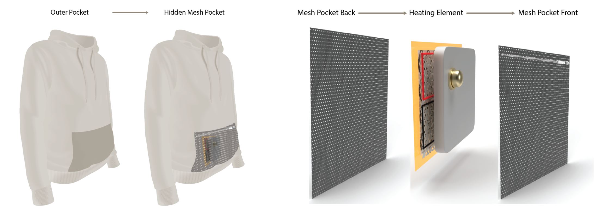

Overview
The focus of this project was to tackle design with a human-centered approach. Our target demographic—menstruators—is a group that is consistently underrepresented and not designed for. After conducting anthropological research and user surveys, our team decided on designing a heated sweatshirt targeting pain relief in the abdominal region, where most menstruators experience pain.
Awards
1st Place - Purdue Design & Innovation Challenge (December 2022)
Design
The goal of this design was to make a product that is discreet, comfortable, and effective for the user. By using a sweatshirt as the medium, we were able to meet all these goals in a way that is also stylish. The design features a heating element within a "kangaroo pouch" behind the main pocket that stores a small, rechargeable heating element that allows for heat to transfer to the abdominal region and alleviate pain discreetly. Additionally, by putting one's hands into the main pocket, they are able to apply pressure to the region, another common way to relieve menstrual pain.

Research
As the only non-menstruator on the multidisciplinary team, it was important for me to do my due diligence while researching this demographic. My research consisted of talking with several menstruators with varying levels of pain, pain tolerance, and pain areas. Below is a graphic of the various areas that people noted where they felt menstrual pain. It is very visible here that the abdominal region is the most common area for pain and therefore the target of our product.
Prototype
As one of two engineers on the team, my role was primarily focused on designing and ensuring the function of the product. Within this role, I focused on the most complicated but also the crucial aspect of our design: the heating element. I was tasked with creating a heating element that would be safe to use on a person's skin for prolonged periods while also being lightweight enough to not feel burdened by it. Using an Arduino UNO, I prototyped a preliminary design featuring a flexible heating element capable of being controlled by a knob and powered using a battery. This preliminary design features all capabilities of a full-fledged product but does not have as compact of a design due to time limitations to meet our competition deadline. Below is a 3D rendering of what a final product may look like.
Improvements
The biggest improvements for this product that I see currently are making the heating element a more compact package and making it rechargeable using USB-C or another type of port instead of having to replace the battery. This would also make the heating element lighter and likely allow it to be more flexible due to allowing for a thinner but wider battery. Additionally, improvements to the quality of the sweatshirt and pouch would make the product ready for market.